|
|

گزارش تصویری کمپین یک میلیون امضا در مراسم 8 مارس فرانسه، آلمان، قبرس و استرالیا
دو شنبه19 اسفند 1387
کمپین یک میلیون امضا در تظاهرات روز زن در پاریس
در پاریس هر ساله، چند ماه قبل از فرا رسیدن روز جهانی زن، کمیتهٔ وسیعی از انجمنهای فعال زنان و احزاب سیاسی برای برنامه ریزی حرکت هماهنگ روز ۸ مارس ایجاد میشود. امسال شاخهٔ پاریس کمپین ۱میلیون امضا برای برابری با کمک لیگ زنان ایرانی به جلسات این کمیته راه پیدا کرد. تصمیم به انجام تظاهراتی در روز ۷مارس (برابر با ۱۷اسفند ۱۳۸۷) گرفته شد.
این تظاهرات با شرکت گروهای فعال زنان و احزاب سیاسی فرانسه و گروهای فمینیستی بین المللی حرکت خود را از میدان بورس پاریس آغاز کرد. شاخهٔ کمپین یک میلیون امضا در پاریس هم با هدف شناسادن این حرکت برابری خواه در ایران، در این تظاهرات شرکت نموده و خواست تا تریبونی باشد برای صدای زنان و مبارزین حقوق زن در ایران. تظاهرکنندگان از بولوارهای بزرگ پاریس (گراند بلوار) عبور کرده تا یک روز قبل از ۸ مارس دیگر بار این مهم را یادآور شوند که نبرد و مبارزه برای احقاق حقوق زنان تنها به یک روز در سال محدود نمیشود و هر روز و در هر مکان باید بر آن تاکید و در راه آن مبارزه کرد.
اعضای شاخه کمپین با یک پرفرمانس در این تظاهرات شرکت کردند. این پرفرمانس با دو شعار اصلی، در ایران، ۱ زن = ۱/۲ مرد، و تغییر برای برابری، لوگوهای کمپین، تصاویر جمع آوری امضا در ایران و خشونت نیروهای پلیسی در میدان هفت تیر و سرودهای کمپین یک ملیون امضا، مورد توجه خاص شرکت کنندگان و عابرین قرار گرفت. همچنین طومار برای آزادی فوری عالیه اقدام دوست توسط اعضای کمپیندر اختیارعلاقه مندان جهت امضا قرار گرفت.
تظاهرات در مقابل کلیسای سنت اگوستین به پایان رسید و گروهای شرکت کننده هر کدام بیانیهٔ پایانی خود را در تریبونی آزاد خواندند. معرفی کمپین برای برابری توسط خانم شهلا شفیق که از مبارزان حقوق زنان و یاری کنندگان این کمپین میباشد انجام پذیرفت. وی از شرکت کنندگان خواست تا نگاهی ویژه به وضعیت زنان در ایران داشته و آنان را در دستیابی به اهدافشان حمایت و یاری کنند.
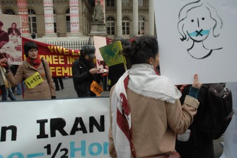
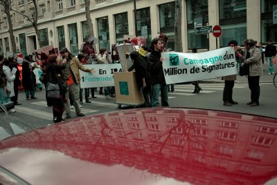
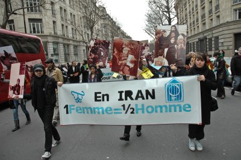
کمپین یک میلیون امضا در استرالیا
همزمان با 8 مارس کمپین یک میلیون امضا در استرالیا نیز آغاز به کار کرد. اعضای کمپین در استرالیا با حضور در راهپیمایی که به مناسبت 8 مارس در ملبورن برگزار شده بود، درباره کمپین و مطالبات زنان ایرانی با مردم سخن گفتند.
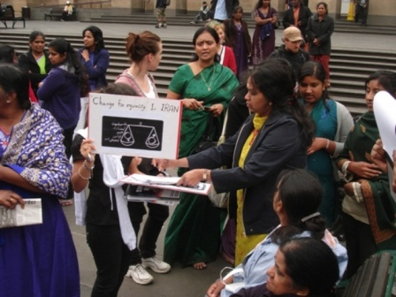
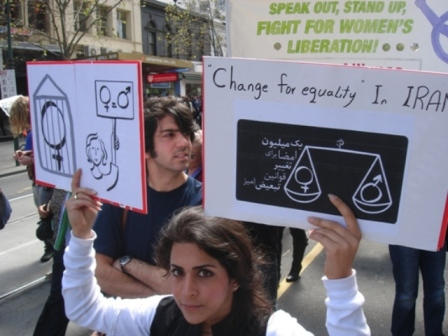
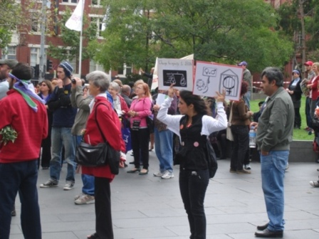
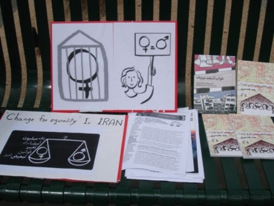
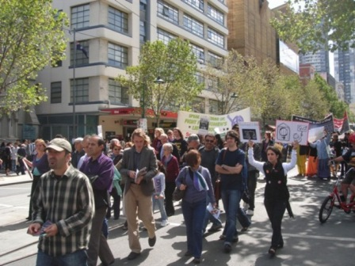
گرامیداشت روز جهانی زن در قبرس
کمپین قبرس : یاران کمپین یک میلیون امضاء در قبرس در روز 8 مارچ به مناسبت گرامیداشت روز جهانی زن گرد هم آمدند و حمایت خود را از کلیه زنان ستمدیده در سرتاسر جهان و به خصوص ایران، اعلام کردند.
اعضای کمپین یک میلیون امضاء در قبرس ضمن یادآوری روز جهانی زن به ساکنین قبرس، کمپین یک میلیون امضاء در ایران را با در اختیار گذاشتن برگه هایی به آنها معرفی کرد. که این برگه ها حاوی اطلاعاتی در مورد کمپین یک میلیون امضا به سه زبان فارسی ؛ انگیسی و قبرسی (یونانی ) بوده است و با اشاره به برخی از قوانین تبعیض آمیز علیه زنان در ایران و تلاشهای آزادی خواهان ایرانی در جهت تغییر این قوانین، اقدام به جمع آوری امضاء کردند.
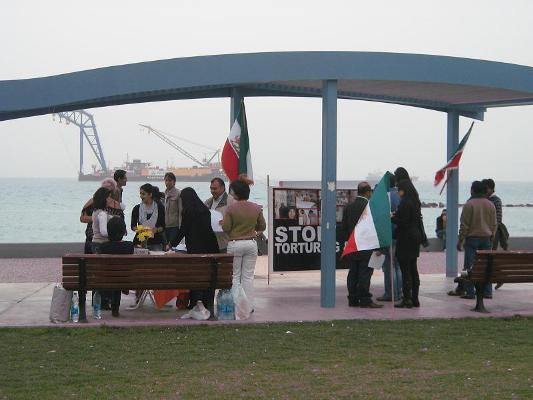
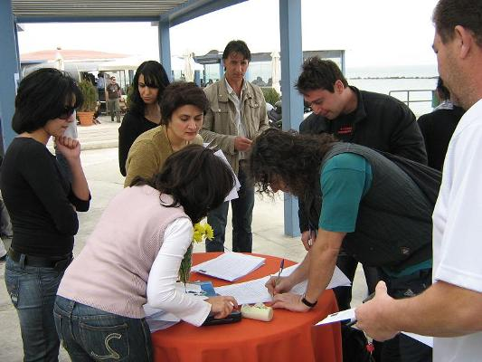
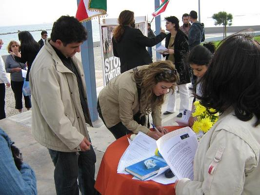
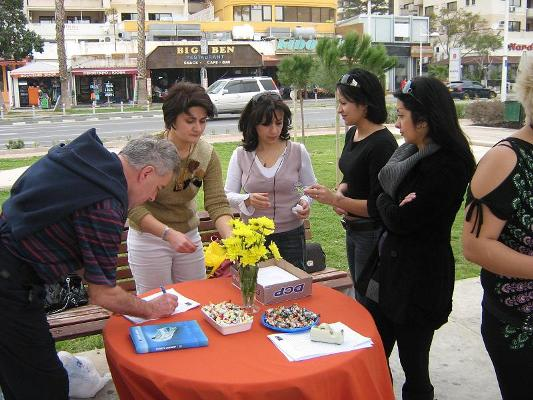
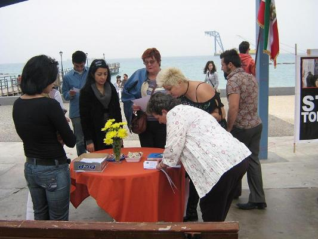
راهپيمايي زنان به مناسبت هشت مارس در برلين/عكس ها از ستاره سجاديه
اعتراض به سنگسار،ديپورت زنان مهاجر و جنگ
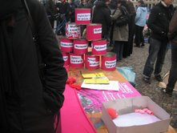
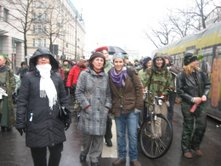
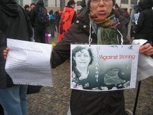